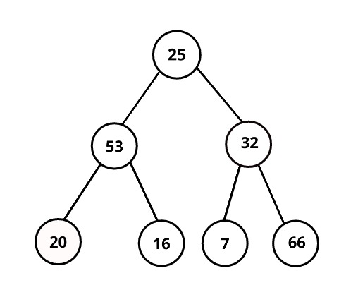

More about Trees
Traversals
Sometimes, you will want to traverse and visit every node in the tree.
This will take O(n) time.
Trees can be traversed through four different orders:
Level-Order, In-Order, Pre-Order, Post-Order
Level-Order Pseudocode
- Begin a queue with the root node
- Enqueue its children from left to right
- Dequeue the next node in line and process it
- Repeat until no nodes remain in queue
In-Order Pseudocode
- Recursively visit left
- Visit and Process node
- Recursively visit right
Pre-Order Pseudocode
- Visit and Process node
- Recursively visit left
- Recursively visit right
Post-Order Pseudocode
- Recursively visit left
- Recursively visit right
- Visit and process node
Traversal Example
Level-Order: 25, 53, 32, 20, 16, 7, 66
In-Order: 20, 53, 16, 25, 7, 32, 66
Pre-Order: 25, 53, 20, 16, 32, 7, 66
Post-Order: 20, 16, 53, 7, 66, 32, 25
Rotations
The purpose of rotations is to keep a tree balanced. We will explore 4 different kinds of rotations: right, left, right-left, and left-right.
Imbalances occur when nodes are inserted and deleted from the tree.
We will treat the node that tips the balance as the child node.
Rotations alter the positioning of the child, parent, and grandparent nodes.

Rotations Explained
Right Rotation

When a tree is imbalanced on its left child, left subtree, we can perform a right-rotation by
making the grandparent node the right child of the parent node.
Left Rotation

When a tree is imbalanced on its right child, right subtree, we perform a left-rotation by
making the grandparent node the left child of the parent node.
Complex rotations
Often, a rotation won't be so simple as changing the pointers of the parent and grandparent nodes
We can perform different rotations when the imbalance is less obvious. Rotations sometimes must be
chained to ensure that the final product is a optimally balanced tree.
Right-Left Rotation

Here the tree is imbalanced on the grandparent's right child, left subtree. We rotate
by first making the leaf node the new child of the grandparent, and the leaf's right child the former
parent. This creates a structure for a trivial left rotation.
Left-Right Rotation

In this example the tree is imbalanced on the grandparent's left child, right subtree. We rotate
by first making the leaf node the new child of the grandparent, and the leaf's left child the former
parent. This creates a structure for a trivial right rotation.